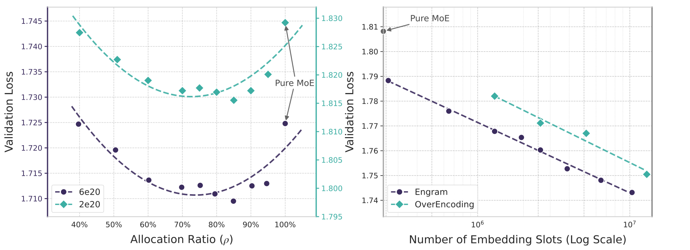

Engram：把条件记忆与条件计算分开扩展¶
💡 Engram 根据输入 token 的短 N-gram 哈希查找大规模静态记忆，再用当前隐状态门控融合，让 Transformer 少花层深重建常见模式，把计算留给动态推理。
MoE 通过条件计算扩大参数容量，但常见短语、实体与固定搭配仍需通过网络层逐步计算。Engram 因而把一部分稀疏参数预算改成可直接查找的记忆，研究“需要计算的模式”和“可以检索的模式”如何分工。它不是外部文档 RAG，也不是让模型记住运行时对话：记忆表是与主干共同训练的参数，地址由当前输入的短 N-gram 决定。论文从哈希检索、上下文门控、层位置和内存系统出发，进一步在固定参数与 FLOPs 条件下比较 MoE/记忆预算，展示两种稀疏机制的互补性。
检索：标准化 token 与多头哈希¶

先把 tokenizer ID 映射到规范化文本 ID，例如 NFKC、大小写等归一处理，在 128k tokenizer 上有效词表减少约 23%。这只用于记忆地址，不替换 LLM 原本需要无损表达的文本 tokenizer。
对位置 \(t\) 的后缀 \(g_{t,n}=(x'_{t-n+1},\ldots,x'_t)\)，每个阶数 \(n\) 使用多个独立哈希头：
表大小使用不同素数，哈希为轻量 multiplicative-XOR。多头降低碰撞造成的信息混淆，但不保证完全无冲突。查找的槽位数固定，因此增加表容量主要增加存储，不按比例增加每 token 的计算。
融合：上下文选择记忆是否有用¶
静态 N-gram 无法自行区分多义词和全局语境。把检索向量映射为 key/value，并用当前隐状态作为 query：
门控可抑制碰撞或语境不匹配的记忆。再用 kernel=4、dilation=最大 N-gram 阶数的深度因果卷积和 SiLU，输出残差加入主干，随后执行 attention/MoE。它仍依赖 token 顺序和已有上下文，不是完全独立于模型状态的词典替换。
mHC 多流主干共享记忆表和 value 投影，各流使用独立 key 投影形成独立 gate，减少重复参数且允许不同流取舍。
固定预算下如何分配 MoE 和记忆¶
定义 \(P_{sparse}=P_{tot}-P_{act}\)，用 \(\rho\) 表示给 MoE 的非激活参数占比，记忆得到 \((1-\rho)P_{sparse}\)。控制总参数与激活量不变，只减少路由专家、增加记忆槽位，避免把“多加参数”的收益误当新机制优势。

在两档计算预算中，约 20%–25% 稀疏预算分配给 Engram 最好；10B 档验证 loss 从纯 MoE 的 1.7248 改为约 1.7109。给记忆过多会损失动态计算，全部给 MoE 又没有专用静态模式存储。最佳比例是所测范围的结果，不是所有模型的固定常数。
大规模配置与结果¶
统一训练 262B token，30 层、hidden 2560、MLA、四流 mHC。MoE-27B 为 72 路由专家、两个共享、top-6；Engram-27B 减到 55 路由专家，释放 5.7B 参数到记忆，总量保持 26.7B。记忆放第 2/15 层，用 2/3-gram、八头；记忆参数 Adam、学习率放大五倍、无 weight decay，主干使用 Muon。
Engram-40B 则保留主干和激活预算，把记忆增加至 18.5B，总量 39.5B。它与 27B 的比较含容量变化，与固定总量的 MoE-27B 对照不是同一实验问题。
| Benchmark (Metric) | # Shots | Dense-4B | MoE-27B | Engram-27B | Engram-40B | |
|---|---|---|---|---|---|---|
| # Total Params | 4.1B | 26.7B | 26.7B | 39.5B | ||
| # Activated (w/o token embed) | 3.8B | 3.8B | 3.8B | 3.8B | ||
| # Trained Tokens | 262B | 262B | 262B | 262B | ||
| # Experts (shared + routed, top- \(k\) ) | - | \(2+72\) (top-6) | \(2+55\) (top-6) | \(2+55\) (top-6) | ||
| # Engram Params | - | - | 5.7B | 18.5B | ||
| Language Modeling | Pile (loss) | - | 2.091 | 1.960 | 1.950 | 1.942 |
| Language Modeling | Validation Set (loss) | - | 1.768 | 1.634 | 1.622 | 1.610 |
| Knowledge & Reasoning | MMLU (Acc.) | 5-shot | 48.6 | 57.4 | 60.4 | 60.6 |
| Knowledge & Reasoning | MMLU-Redux (Acc.) | 5-shot | 50.7 | 60.6 | 64.0 | 64.5 |
| Knowledge & Reasoning | MMLU-Pro (Acc.) | 5-shot | 21.1 | 28.3 | 30.1 | 31.3 |
| Knowledge & Reasoning | CMMLU (Acc.) | 5-shot | 47.9 | 57.9 | 61.9 | 63.4 |
| Knowledge & Reasoning | C-Eval (Acc.) | 5-shot | 46.9 | 58.0 | 62.7 | 63.3 |
| Knowledge & Reasoning | AGIEval (Acc.) | 0-shot | 29.1 | 38.6 | 41.8 | 45.9 |
| Knowledge & Reasoning | ARC-Easy (Acc.) | 25-shot | 76.8 | 86.5 | 89.0 | 90.1 |
| Knowledge & Reasoning | ARC-Challenge (Acc.) | 25-shot | 59.3 | 70.1 | 73.8 | 76.4 |
| Knowledge & Reasoning | TriviaQA (EM) | 5-shot | 33.0 | 48.8 | 50.7 | 51.8 |
| Knowledge & Reasoning | TriviaQA-ZH (EM) | 5-shot | 62.8 | 74.8 | 76.3 | 77.9 |
| Knowledge & Reasoning | PopQA (EM) | 15-shot | 15.1 | 19.2 | 19.4 | 21.2 |
| Knowledge & Reasoning | CCPM (Acc.) | 0-shot | 72.2 | 79.6 | 87.1 | 87.7 |
| Knowledge & Reasoning | BBH (EM) | 3-shot | 42.8 | 50.9 | 55.9 | 57.5 |
| Knowledge & Reasoning | HellaSwag (Acc.) | 0-shot | 64.3 | 71.8 | 72.7 | 73.1 |
| Knowledge & Reasoning | PIQA (Acc.) | 0-shot | 63.8 | 71.9 | 73.5 | 76.5 |
| WinoGrande (Acc.) | 5-shot | 64.0 | 67.6 | 67.8 | 68.1 | |
| Reading Comprehension | DROP (F1) | 1-shot | 41.6 | 55.7 | 59.0 | 60.7 |
| Reading Comprehension | RACE-Middle (Acc.) | 5-shot | 72.4 | 80.9 | 82.8 | 83.3 |
| Reading Comprehension | RACE-High (Acc.) | 5-shot | 66.0 | 75.4 | 78.2 | 79.2 |
| Reading Comprehension | C3 (Acc.) | 0-shot | 57.7 | 60.1 | 63.6 | 61.8 |
| Code & Math | HumanEval (Pass@1) | 0-shot | 26.8 | 37.8 | 40.8 | 38.4 |
| Code & Math | MBPP (Pass@1) | 3-shot | 35.4 | 46.6 | 48.2 | 46.2 |
| Code & Math | CruxEval-i (EM) | 0-shot | 27.6 | 30.7 | 32.2 | 36.2 |
| Code & Math | CruxEval-o (EM) | 0-shot | 28.7 | 34.1 | 35.0 | 35.3 |
| Code & Math | GSM8K (EM) | 8-shot | 35.5 | 58.4 | 60.6 | 62.6 |
| Code & Math | MGSM (EM) | 8-shot | 27.0 | 46.8 | 49.4 | 52.4 |
| Code & Math | MATH (EM) | 4-shot | 15.2 | 28.3 | 30.7 | 30.6 |
表覆盖知识、阅读、数学与代码。改善不只发生在记忆问答，作者认为静态模式被更早处理，为后层留下更多有效计算。MMLU 的提升按正文/表中约 3.0 个点记录，摘要出现的 3.4 不与表混用。
| Model | LongPPL (32k) | LongPPL (32k) | LongPPL (32k) | LongPPL (32k) | RULER (32k) | RULER (32k) | RULER (32k) | RULER (32k) | RULER (32k) | RULER (32k) | RULER (32k) | RULER (32k) |
|---|---|---|---|---|---|---|---|---|---|---|---|---|
| Model | Perplexity ( \(\downarrow\) ) | Perplexity ( \(\downarrow\) ) | Perplexity ( \(\downarrow\) ) | Perplexity ( \(\downarrow\) ) | NIAH Accuracy ( \(\uparrow\) ) | NIAH Accuracy ( \(\uparrow\) ) | NIAH Accuracy ( \(\uparrow\) ) | NIAH Accuracy ( \(\uparrow\) ) | Other Tasks ( \(\uparrow\) ) | Other Tasks ( \(\uparrow\) ) | Other Tasks ( \(\uparrow\) ) | Other Tasks ( \(\uparrow\) ) |
| Model | Book | Paper | Code | L-CoT | S | MK | MV | MQ | VT | CWE | FWE | QA |
| MoE-27B (50k, 1.63) | 4.38 | 2.91 | 2.49 | 14.16 | 100.0 | 88.0 | 92.7 | 84.2 | 77.0 | 4.5 | 73.0 | 34.5 |
| Engram-27B (41k, 1.66) | 4.37 | 2.92 | 2.50 | 14.26 | 99.6 | 88.3 | 93.0 | 89.5 | 83.2 | 3.8 | 99.6 | 44.0 |
| Engram-27B (46k, 1.63) | 4.19 | 2.84 | 2.45 | 13.59 | 97.6 | 89.0 | 95.5 | 97.0 | 87.2 | 4.3 | 98.6 | 37.5 |
| Engram-27B (50k, 1.62) | 4.14 | 2.82 | 2.44 | 13.41 | 99.3 | 89.3 | 96.5 | 97.0 | 89.0 | 5.9 | 99.3 | 40.5 |
长上下文继续训练后，LongPPL 和 RULER 提供不同证据：前者检查语言建模，后者检查长距离任务。不能因使用短 N-gram 就假定只对短上下文有用，也不能反过来推断它可以替代全局注意力。
结构与位置消融¶
小规模对照为 12 层 3B MoE、0.56B 激活、100B token，额外固定 1.6B 记忆。基线 loss 1.808，记忆放 2/6 层为 1.768；单层放第 2 层为 1.770，晚放整体变差。

太早还没有足够上下文形成准确 gate，太晚则主干已付出重建局部模式的计算。去掉分流门控、上下文 gate 或 tokenizer 压缩的损失较明显；去卷积影响较小，固定预算加入 4-gram 略逊，可能稀释频繁 2/3-gram 容量。
推理时把记忆输出强行归零，事实知识保留约 29%–44%，阅读理解保留约 81%–93%。这是训练—推理不一致的破坏性测试，支持功能分工，但不能据此精确定位全部知识只存在哪个模块。
内存系统与效率实验¶
地址只依赖 token ID，能在到达记忆层之前预取；训练把表分片到 GPU，用 All-to-All 取行与回传梯度，推理可把大表放主机 DRAM，通过 PCIe 与前层计算重叠。
| Experimental Setup | Experimental Setup | Experimental Setup |
|---|---|---|
| Hardware | Hardware | NVIDIA H800 |
| Workload | Workload | 512 Sequences |
| Sequence Length | Sequence Length | Uniform \((100,1024)\) |
| Base Model | Configuration | Throughput (tok/s) |
| 4B-Dense | Baseline | 9,031.62 |
| 4B-Dense | 加入 100B Engram（CPU 卸载） | 8,858.28 |
| 8B-Dense | Baseline | 6,315.52 |
| 8B-Dense | 加入 100B Engram（CPU 卸载） | 6,140.02 |
系统实验在 Dense-4B/8B 上插入 100B 参数的记忆表，完整表在 CPU 内存，nano-vLLM 原型异步预取，吞吐损失最高约 2.8%。这是指定 dense 主干、batch 和上下文的实验，刻意避开 MoE EP 干扰，不是任意 MoE 集群的实测结论。
层位置因而同时受建模和系统约束：早放更省主干计算，晚一点则给传输更多遮蔽时间。总表容量很大，但每步 PCIe 搬运与激活行数相关；大表并不需要每 token 完整复制到 GPU。
结论与边界¶
Engram 不是无限无代价内存，仍有哈希碰撞、查表带宽、参数训练与分布泛化问题。其查找只依赖短局部模式，复杂语境需 gate 和主干处理；确定地址的优势也不等于无需通信。
论文的主要结论是条件记忆与 MoE 条件计算互补，在控制总量和 FLOPs 的对照中比单一 MoE 更有效。它把稀疏扩展从“更多专家”推进到“专家与记忆如何分配”，并用层位置、组件和系统实验支撑这一点。